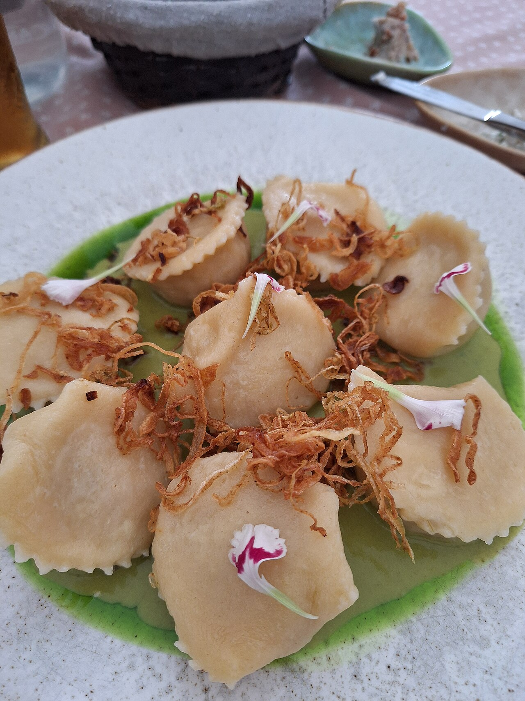
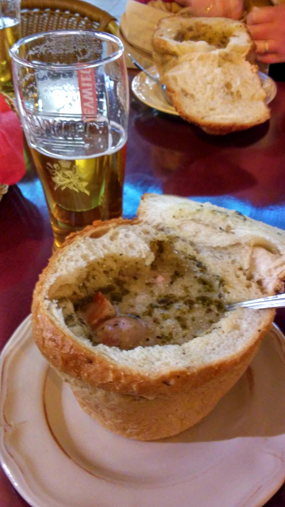
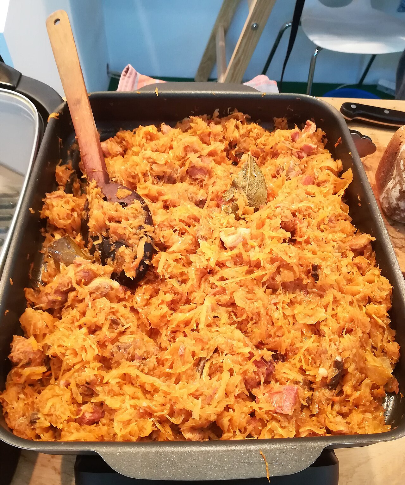
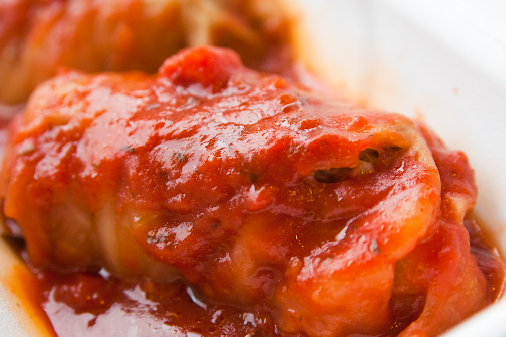
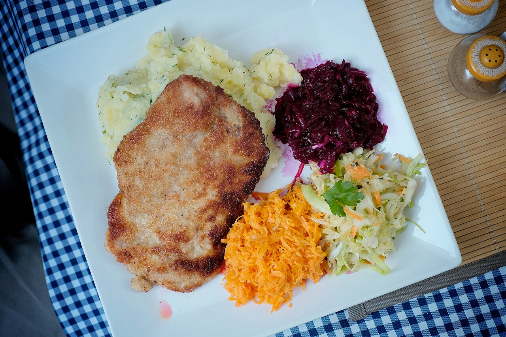
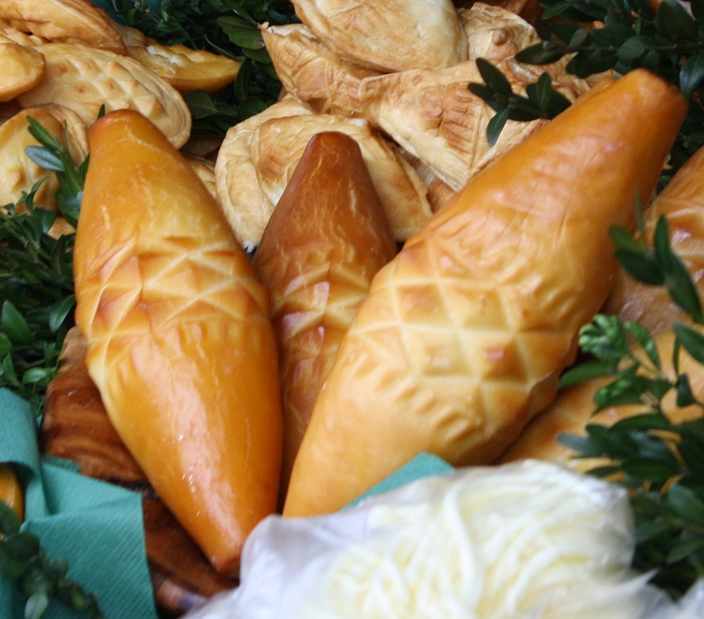
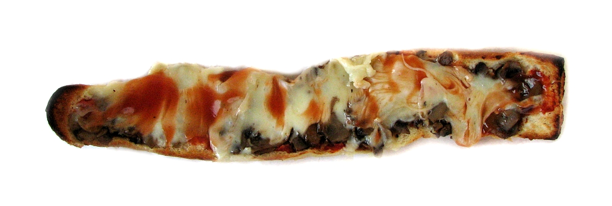
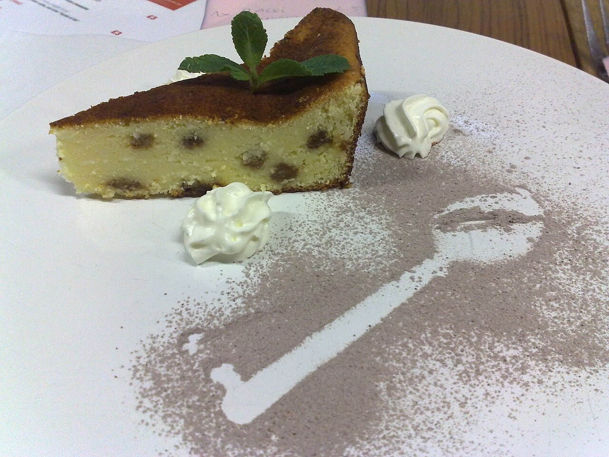
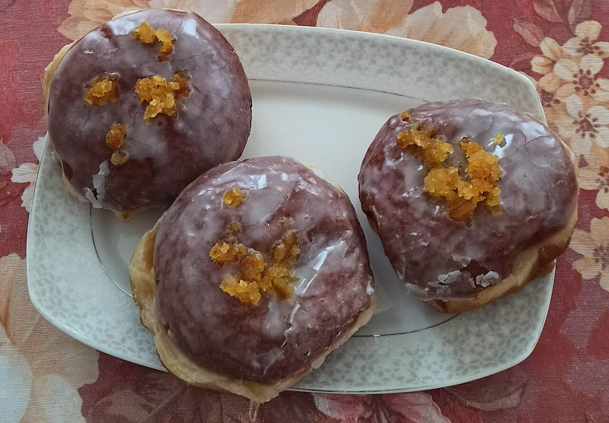

폴란드 음식의 특징
폴란드 식문화에서는 감자, 호밀과 밀가루, 발효 양배추, 버섯, 육류, 유제품과 제철 과일을 폭넓게 사용한다. 특히 수프와 만두류는 가정과 지역마다 조리법이 다양하다. 폴란드 음식이 ‘전부 육류 중심’인 것은 아니다. 버섯·양배추를 사용하는 음식, 과일을 채운 피에로기, 크리스마스이브의 생선·채식 중심 요리 등도 중요하다.
- 주식·식사류: 피에로기, 코틀레트 스하보비, 비고스 등
- 수프: 주레크, 바르슈치(barszcz), 로수우(rosół) 등
- 길거리 음식: 자피에칸카, 그릴 치즈류
- 디저트: 세르니크, 퐁치키, 마코비에츠(makowiec)
대표 음식 9종
사진은 Wikimedia Commons에 공개된 실제 촬영본이며, 저작자와 라이선스를 각 사진 아래에 적었습니다. 촬영한 식당·지역·조리법에 따라 실제 모습은 다를 수 있습니다.
-

사진: Heidi Meudt · CC BY 4.0 · Wikimedia Commons 피에로기Pierogi
얇은 반죽에 감자·치즈·버섯·고기·과일 등을 넣어 삶거나 구운 폴란드식 만두.
자세히 보기
전국적으로 유명한 음식으로, 속에 무엇을 채우는지에 따라 종류가 달라진다. 감자와 흰 치즈를 채운 pierogi ruskie, 양배추와 버섯을 채운 pierogi z kapustą i grzybami, 달콤한 과일 속을 넣은 변형 등이 있다. 삶아 낸 뒤 볶은 양파나 사워크림과 함께 먹기도 한다.
- 주재료
- 밀가루 반죽, 감자·치즈 또는 고기/버섯 등
- 어디서 먹나
- 전국의 폴란드 가정식 식당·피에로기 전문점
- 알레르기 정보
- 밀·유제품·달걀 가능; 속재료별 확인
- 참고
- ruskie는 역사적 지역명에서 온 표현으로 현재 러시아 요리라는 뜻으로 단순화하지 않기
-

사진: Mith · CC BY-SA 4.0 · Wikimedia Commons 주레크Żurek
발효 호밀 반죽을 사용해 새콤한 맛을 내는 전통 수프.
자세히 보기
발효 호밀을 이용한 산미가 주레크의 핵심이다. 지역이나 가정에 따라 소시지와 삶은 달걀, 감자 등이 들어간다. 빵을 파낸 그릇에 담는 방식은 관광객에게 친숙하지만 모든 주레크가 빵 그릇에 나오는 것은 아니다. 부활절 식탁과도 연결된다.
- 주재료
- 발효 호밀 스타터, 육수, 소시지, 달걀 등
- 어디서 먹나
- 폴란드 전통음식 전문점, 부활절 식탁
- 알레르기 정보
- 글루텐·달걀·육류 포함 가능
- 참고
- Żurek와 biały barszcz는 쓰는 발효 재료 등에서 차이가 있으며 지역별 차이도 있다.
-

사진: MOs810 · CC BY-SA 4.0 · Wikimedia Commons 비고스Bigos
발효 양배추와 고기, 버섯 등을 오래 끓인 진한 스튜.
자세히 보기
발효 양배추(kiszona kapusta)와 고기, 말린 버섯, 향신료 등으로 맛을 내며 가정마다 조합이 다르다. 흔히 사냥꾼의 스튜라고 영어로 소개된다. 재가열하면서 맛이 깊어진다고 설명되며 추운 계절의 음식 이미지가 강하다.
- 주재료
- 발효 양배추, 신선한 양배추, 다양한 고기, 버섯
- 어디서 먹나
- 전통식 식당, 겨울철 가정식
- 알레르기 정보
- 고기 포함; 조리법에 따라 기타 알레르기 확인
- 참고
- 한 가지 표준 조리법만 존재한다고 설명하지 않기
-

사진: Steven Depolo · CC BY 2.0 · Wikimedia Commons 고웡프키Gołąbki
양배추 잎에 다진 고기와 쌀 등을 넣어 말아 익힌 음식.
자세히 보기
양배추 잎을 데쳐 고기·쌀 등을 말아 익힌 뒤 토마토 소스 또는 다른 소스와 함께 먹는 경우가 흔하다. 폴란드뿐 아니라 주변 지역에도 비슷한 속채운 양배추 음식이 있어 동유럽 음식문화의 공통점과 차이를 비교하는 소재가 된다.
- 주재료
- 양배추 잎, 쌀, 다진 고기, 소스
- 어디서 먹나
- 가정식 식당·가정 조리
- 알레르기 정보
- 고기 포함 사례 많음, 소스 확인
- 참고
- 폴란드어 gołąbki는 직역하면 비둘기들의 뜻이지만 이 음식에 비둘기고기가 필수인 것은 아님
-

사진: Dmitry Dzema · CC BY-SA 4.0 · Wikimedia Commons 코틀레트 스하보비Kotlet schabowy
돼지고기 등심을 두드려 빵가루를 입혀 튀기거나 지진 돈가스와 닮은 음식.
자세히 보기
폴란드의 대표적인 주말 가정식으로 소개되는 메뉴다. 감자·오이 샐러드(mizeria)와 함께 한 접시에 담기는 방식이 흔하다. 비슷해 보이는 일본 돈카츠와 비교할 수 있지만 폴란드의 가정식 맥락과 사이드 메뉴를 설명하는 것이 좋다.
- 주재료
- 돼지고기 등심, 밀가루, 달걀, 빵가루
- 어디서 먹나
- 전통식 식당, 점심 메뉴
- 알레르기 정보
- 밀·달걀; 돼지고기
- 참고
- 오스트리아 슈니첼과의 유사성은 다룰 수 있으나 기원을 단정하지 않기
-

사진: Paweł Świegoda (Paberu) · CC BY-SA 2.5 · Wikimedia Commons 오스치페크Oscypek
폴란드 남부 포드할레 지방의 훈제 양젖 치즈로, 독특한 무늬와 방추형 모양이 특징.
자세히 보기
오스치페크는 타트라산맥 주변 포드할레 지역의 전통 치즈다. 양젖을 중심으로 하는 제조 요건과 지역성이 있어 EU 지리적 표시 제도의 PDO(원산지 명칭 보호) 식품으로 소개된다. 관광지에서 구워 잼을 곁들이는 음식도 많이 보이지만, 길거리의 비슷한 치즈가 모두 정식 PDO 오스치페크인 것은 아니다.
- 주재료
- 전통 방식의 양젖 중심 치즈
- 어디서 먹나
- 자코파네·포드할레 지역
- 알레르기 정보
- 유제품
- 참고
- 동봉한 AI 예시 이미지가 실제 원통형/방추형 훈제 치즈 외형과 다를 수 있어 공개 전 반드시 실제 사진으로 교체 추천
-

사진: Mariuszjbie · CC BY-SA 3.0 · Wikimedia Commons 자피에칸카Zapiekanka
바게트류 빵을 반으로 갈라 버섯·치즈 등을 올려 구운 폴란드식 오픈 샌드위치.
자세히 보기
1980년대 이후 폴란드 도시형 간식으로 널리 알려졌다. 전통적인 형태는 길쭉한 빵 위에 볶은 버섯과 치즈를 얹어 굽고 케첩 등을 뿌리는 것이다. 크라쿠프 카지미에시의 플라츠 노비(Plac Nowy)와 연계한 여행 콘텐츠에 적합하다.
- 주재료
- 바게트류 빵, 버섯, 치즈, 케첩
- 어디서 먹나
- 길거리 간식점, 크라쿠프 카지미에시
- 알레르기 정보
- 밀·유제품
- 참고
- 토핑은 현대적으로 매우 다양해졌다
-

사진: secretlondon123 · CC BY-SA 2.0 · Wikimedia Commons 세르니크Sernik
트바루크(twaróg) 계열 신선 치즈를 사용하는 폴란드식 치즈케이크.
자세히 보기
폴란드 세르니크는 미국식 크림치즈케이크와 다른 재료감을 가진 버전이 많다. 치즈와 달걀, 설탕 등을 활용하고, 건포도·과일·초콜릿 코팅 등 다양한 가정·지역 변형이 존재한다. 카페나 제과점의 일상적인 디저트로 소개하기 좋다.
- 주재료
- 트바루크 치즈, 달걀, 설탕 등
- 어디서 먹나
- 전국의 제과점·카페
- 알레르기 정보
- 유제품·달걀·밀 가능
- 참고
- 바닥 반죽 유무와 굽는 방식은 레시피별로 다름
-

사진: Aw58 · CC BY 4.0 · Wikimedia Commons 퐁치키Pączki
잼이나 크림을 넣고 튀긴 폴란드식 도넛.
자세히 보기
전통적으로 장미잼 등 속을 채우고 설탕가루나 글레이즈를 얹는다. 사순절 이전의 Tłusty Czwartek(기름진 목요일, Fat Thursday)에 특히 많이 먹는 음식으로 알려져 있다. 한국의 도넛과 비교하며 지역의 축제와 디저트를 함께 소개하기 좋다.
- 주재료
- 밀가루 반죽, 기름, 잼·커스터드 등
- 어디서 먹나
- 제과점·베이커리, Fat Thursday 시즌
- 알레르기 정보
- 밀·달걀·우유 등
- 참고
- pączek은 단수, pączki는 복수
메뉴에 자주 등장하는 단어
| 폴란드어 | 의미 | 독자에게 필요한 설명 |
|---|---|---|
| zupa | 수프 | 메뉴의 수프 분류 |
| mięso | 고기 | 채식·식단 확인 |
| wieprzowina | 돼지고기 | |
| kurczak | 닭고기 | |
| wołowina | 소고기 | |
| ryba | 생선 | |
| ser | 치즈 | |
| kapusta | 양배추 | |
| ziemniaki | 감자 | |
| grzyby | 버섯 | |
| słodkie | 달콤한 | |
| bez mięsa | 고기 없이 | 완전한 비건과 동일하지 않음 |
지역 음식
- 토룬의 피에르니크(piernik toruński): 도시를 상징하는 향신료 진저브레드.
- 포즈난의 성 마르친 크루아상(Rogal świętomarciński): 지역 전통의 페이스트리로 지리적 표시와 연결해 소개 가능.
- 포드할레의 오스치페크(Oscypek): 양젖 훈제치즈와 산악 지역 식문화.
- 크라쿠프의 자피에칸카: 카지미에시의 길거리 음식 경험과 연결.
축제·명절과 식탁
- Wigilia(12월 24일 크리스마스이브): 전통적으로 12가지 요리를 차리는 가정이 많다. 바르슈치·우슈카·생선·피에로기·양귀비씨 디저트가 등장한다.
- Wielkanoc(부활절): 달걀, 주레크 등 음식과 바구니 축복 풍습의 연결을 소개할 수 있다.
- Tłusty Czwartek(Fat Thursday): 퐁치키와 연결되는 달콤한 명절.
자주 묻는 질문
Q. 피에로기는 무조건 고기만두인가요?
A. 아니요. 감자·치즈·양배추·버섯·과일 등 여러 종류가 있다.
Q. 폴란드 음식은 맵나요?
A. 매운맛이 일괄적으로 특징인 식문화는 아니며, 산미·훈연향·버섯·허브와 육수의 풍미가 다양하게 등장한다.
Q. 채식주의자도 먹을 수 있나요?
A. 채식 피에로기나 버섯 요리 등을 선택할 수 있지만 달걀·유제품·육수 포함 여부는 반드시 확인해야 한다.